Замок Хімедзі (яп. 姫路城, ひめじじょう) — японський замок у місті Хімедзі, префектури Хьоґо, Японія. Назва походить від гори Хіме, у підніжжя якої він розташований. Також популярна назва «замок білої чаплі» (яп. 白鷺城, хакуродзьо). Збудований у 1346 як один із замків роду Акамацу на високому пагорбі, оточеному трьома кільцями фортечних стін білого кольору, верхня частина яких вкрита сірою черепицею.
Історія
У 1580 замок перебудований васалами Тойотомі Хідейосі. За його наказом збудовано 30 нових башт.
У 1601—1608 розширений родом Ікеда (побудовано ще 20 башт). Згодом, впродовж 300 років, слугував основною резиденцією даймьо Хімедзі-хан.
Після реставрації Мейдзі, у 1871 проданий з аукціону.
Зазнав серйозних пошкоджень у результаті бомбардувань силами США міста Хімедзі в ході Другої світової війни.
Головна башта і центральні двори замку були реставровані у 1956—1964.
Сьогодні служить як музей і приклад японської замкової архітектури періоду Едо. Включає 83 будівлі, які побудовані з дерева. Висота головної башти — 83 м. Сад, що оточує замок, становить спіралевидний лабіринт, з багатьма тупиковими і боковими відгалуженнями. За задумом будівельників лабіринт повинен робити прохід до стін цитаделі утрудненим для військ неприятеля, по яких осаджені могли стріляти з башт і донжону. Проте функціональність лабіринту не проходила перевірки боєм.
Замок зарахований до національних скарбів Японії і Світової спадщини ЮНЕСКО у 1993. Разом із замками Кумамото і Мацумото входить до «трьох видатних замків Японії»
 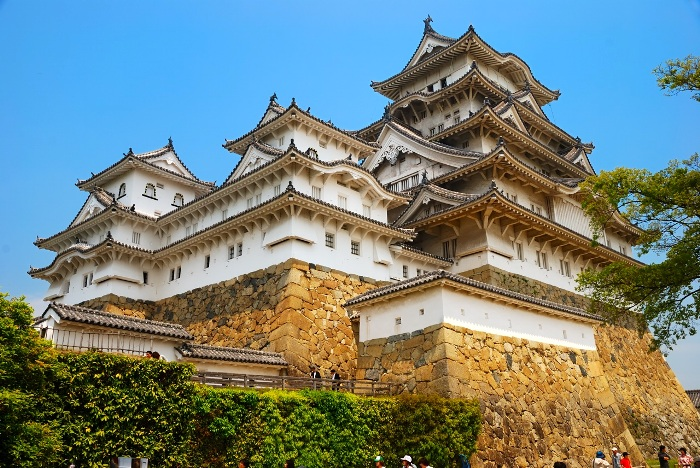
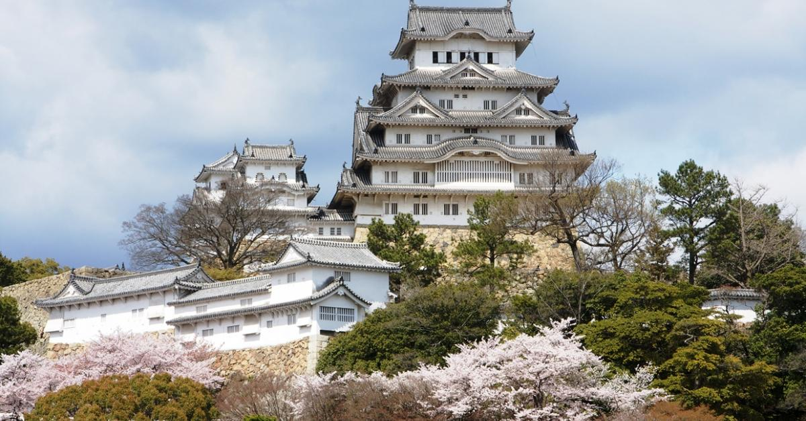
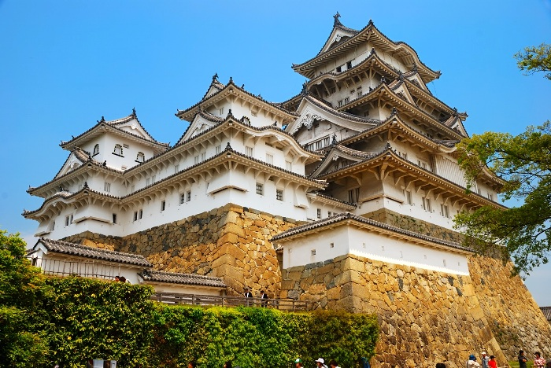
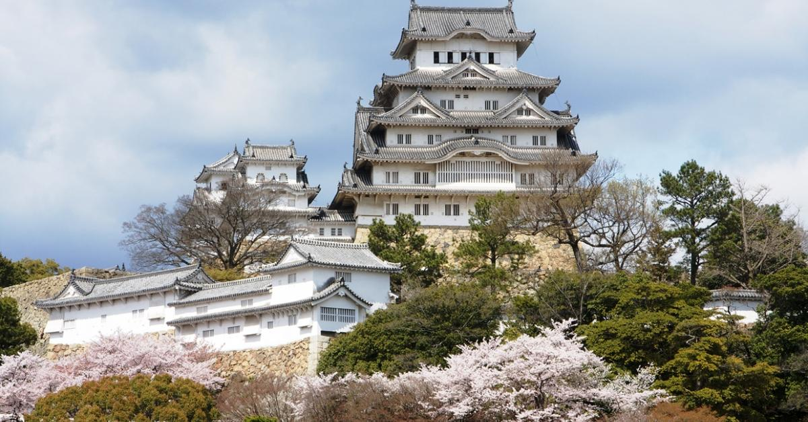
 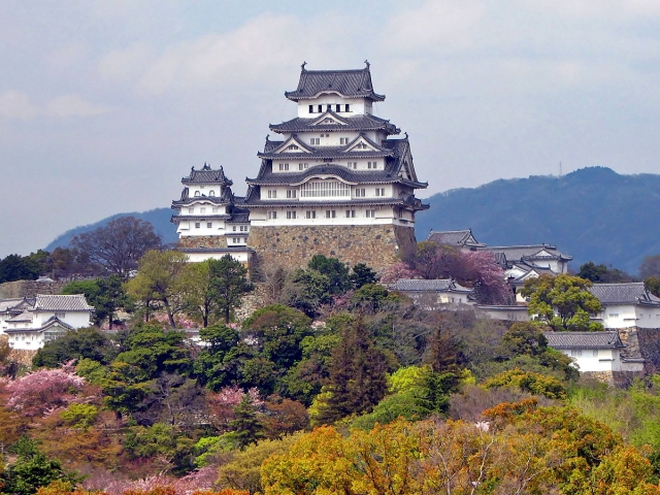
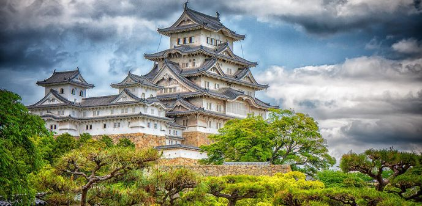
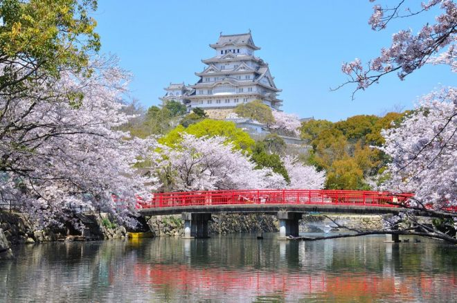
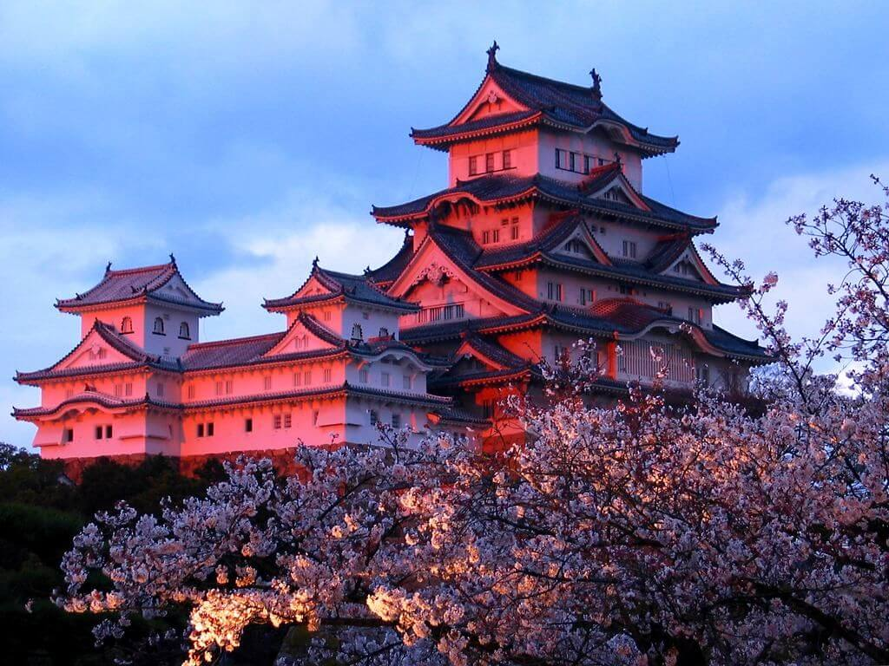
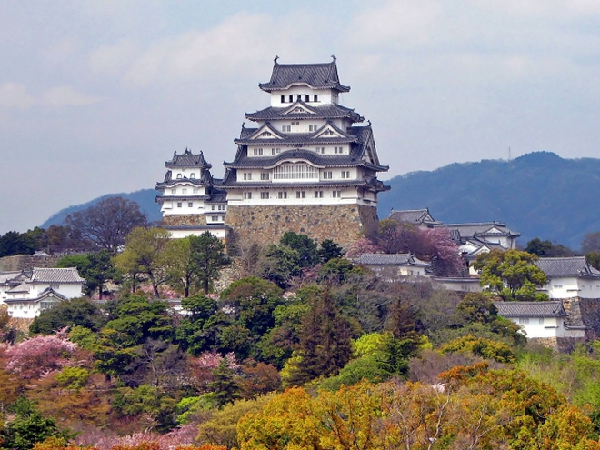
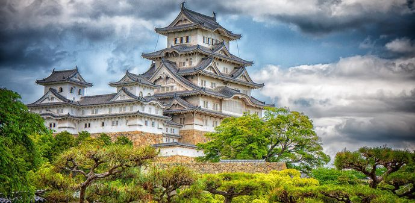
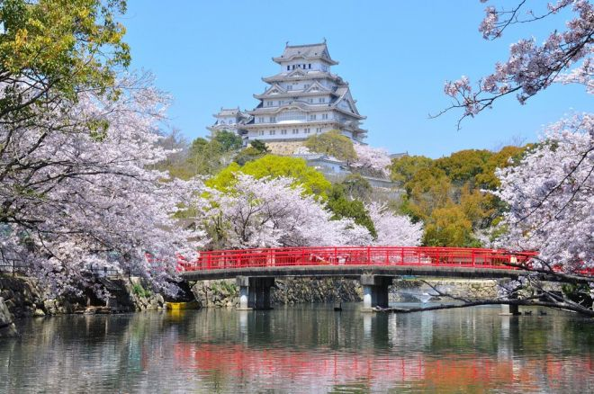
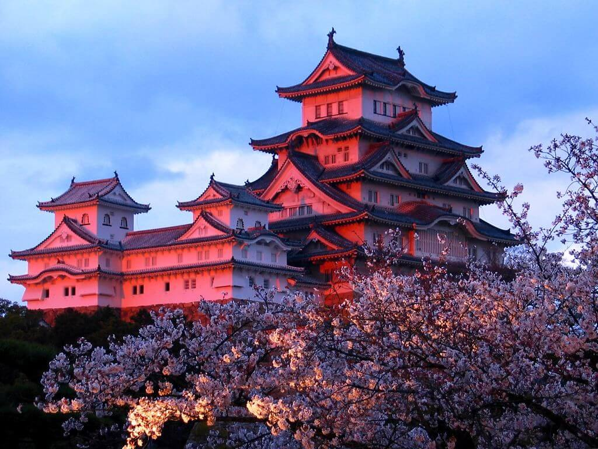